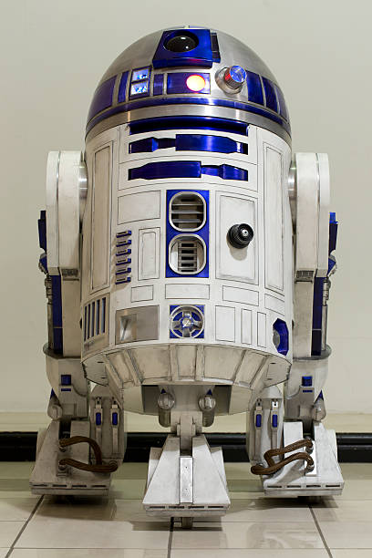

Mon voyage sur Tatooine a été une perte de temps considérable. Non seulement j'ai dû supporter des tempêtes de sable désagréables, mais je n'ai trouvé aucun indice de la présence des rebelles ou de Luke Skywalker. Les habitants du désert étaient ignorants et sans valeur pour moi. Je regrette d'avoir gaspillé mon temps précieux dans ce trou perdu.
Publié le 23 avril 2023

R2D2
Bip-boop-beep! Whistle-whirr-chirp. Beep-boop!
Publié le 23 avril 2023
C-3PO
"Cher ami,
Je tenais à partager mon expérience de voyage sur Tatooine avec vous. En tant que droïde de protocole, j'ai été chargé d'assister ma maîtresse, la princesse Leia Organa. Malgré les défis et les dangers auxquels nous avons dû faire face, Tatooine s'est révélée être une planète fascinante.
Les dunes de sable à perte de vue, les deux soleils brillants dans le ciel, et les habitants locaux, tels que les Jawas et les Tusken Raiders, ont constitué une expérience unique. Bien que la chaleur soit parfois étouffante, j'ai été impressionné par la résilience et la bravoure des habitants de Tatooine.
Cependant, je dois noter que les conditions de vie sur Tatooine sont extrêmement arides et inhospitalières, ce qui peut rendre le voyage difficile pour les organiques et les droïdes. Les tempêtes de sable sont fréquentes, et la menace des créatures indigènes, comme les krayt dragons, est bien réelle.
En ce qui concerne les installations touristiques, Tatooine offre peu d'options pour les voyageurs. Les villes, comme Mos Eisley, sont plutôt rudimentaires et peu développées. Cependant, le marché des droïdes de Mos Eisley est bien approvisionné en pièces détachées, ce qui peut être utile pour les réparations d'urgence.
En somme, Tatooine est une destination unique, mais aussi exigeante. Si vous décidez de vous y aventurer, je vous conseille de bien vous préparer en emportant suffisamment d'eau, de vêtements de protection et de vous informer sur les dangers potentiels.
Que la Force soit avec vous !
Cordialement,
C-3PO"
Dark Vador
Mon voyage sur Tatooine a été une perte de temps considérable. Non seulement j'ai dû supporter des tempêtes de sable désagréables, mais je n'ai trouvé aucun indice de la présence des rebelles ou de Luke Skywalker. Les habitants du désert étaient ignorants et sans valeur pour moi. Je regrette d'avoir gaspillé mon temps précieux dans ce trou perdu.
Publié le 23 avril 2023R2D2
Bip-boop-beep! Whistle-whirr-chirp. Beep-boop!
Publié le 23 avril 2023C-3PO
"Cher ami, Je tenais à partager mon expérience de voyage sur Tatooine avec vous. En tant que droïde de protocole, j'ai été chargé d'assister ma maîtresse, la princesse Leia Organa. Malgré les défis et les dangers auxquels nous avons dû faire face, Tatooine s'est révélée être une planète fascinante. Les dunes de sable à perte de vue, les deux soleils brillants dans le ciel, et les habitants locaux, tels que les Jawas et les Tusken Raiders, ont constitué une expérience unique. Bien que la chaleur soit parfois étouffante, j'ai été impressionné par la résilience et la bravoure des habitants de Tatooine. Cependant, je dois noter que les conditions de vie sur Tatooine sont extrêmement arides et inhospitalières, ce qui peut rendre le voyage difficile pour les organiques et les droïdes. Les tempêtes de sable sont fréquentes, et la menace des créatures indigènes, comme les krayt dragons, est bien réelle. En ce qui concerne les installations touristiques, Tatooine offre peu d'options pour les voyageurs. Les villes, comme Mos Eisley, sont plutôt rudimentaires et peu développées. Cependant, le marché des droïdes de Mos Eisley est bien approvisionné en pièces détachées, ce qui peut être utile pour les réparations d'urgence. En somme, Tatooine est une destination unique, mais aussi exigeante. Si vous décidez de vous y aventurer, je vous conseille de bien vous préparer en emportant suffisamment d'eau, de vêtements de protection et de vous informer sur les dangers potentiels. Que la Force soit avec vous ! Cordialement, C-3PO"
Publié le 23 avril 2023